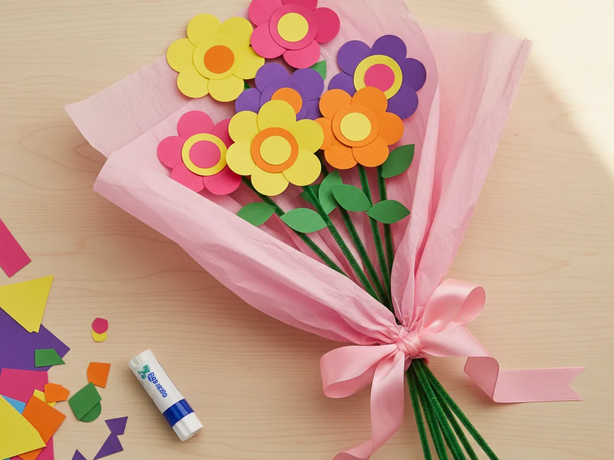
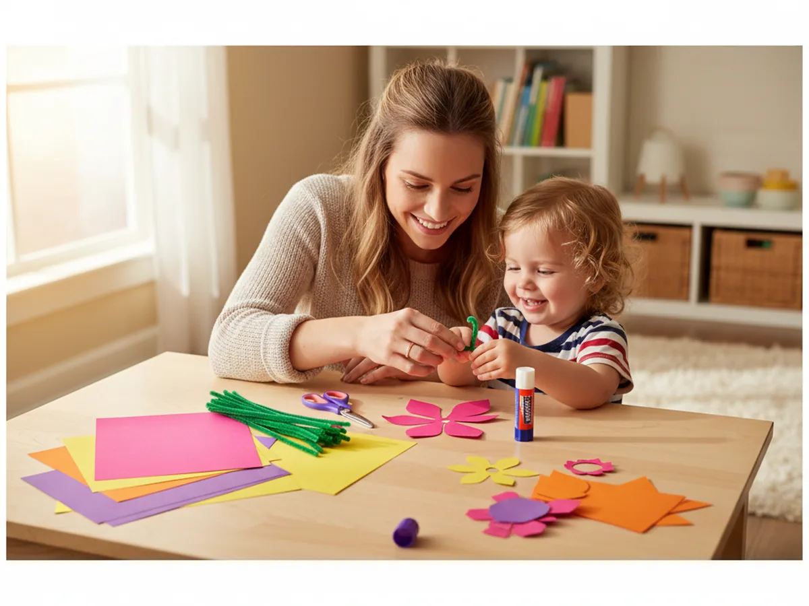
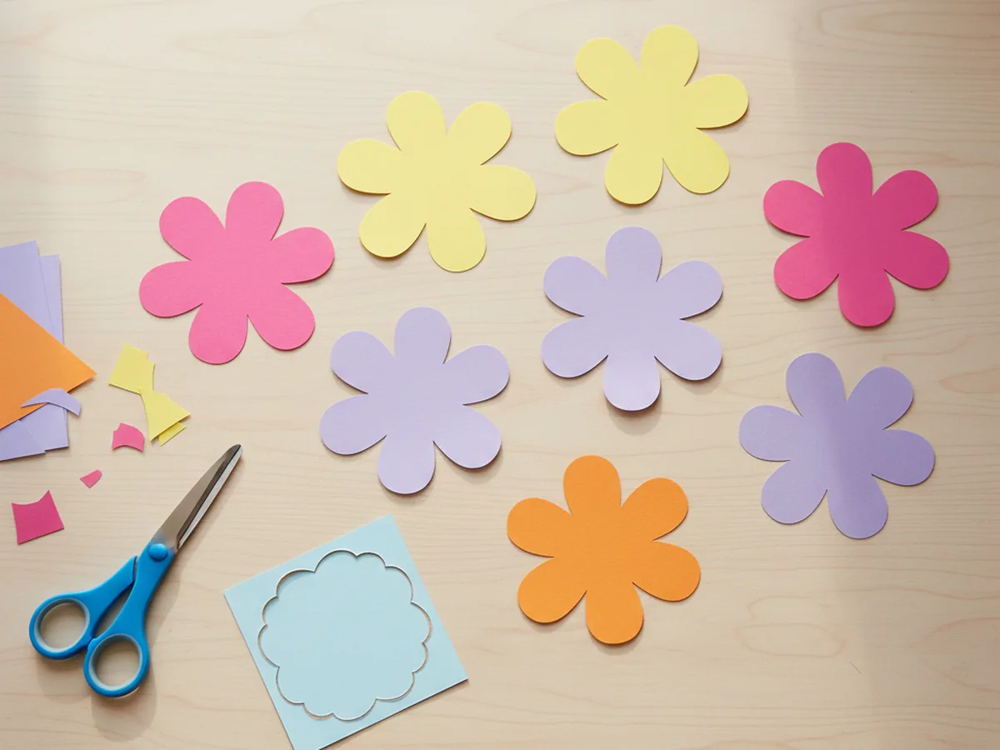
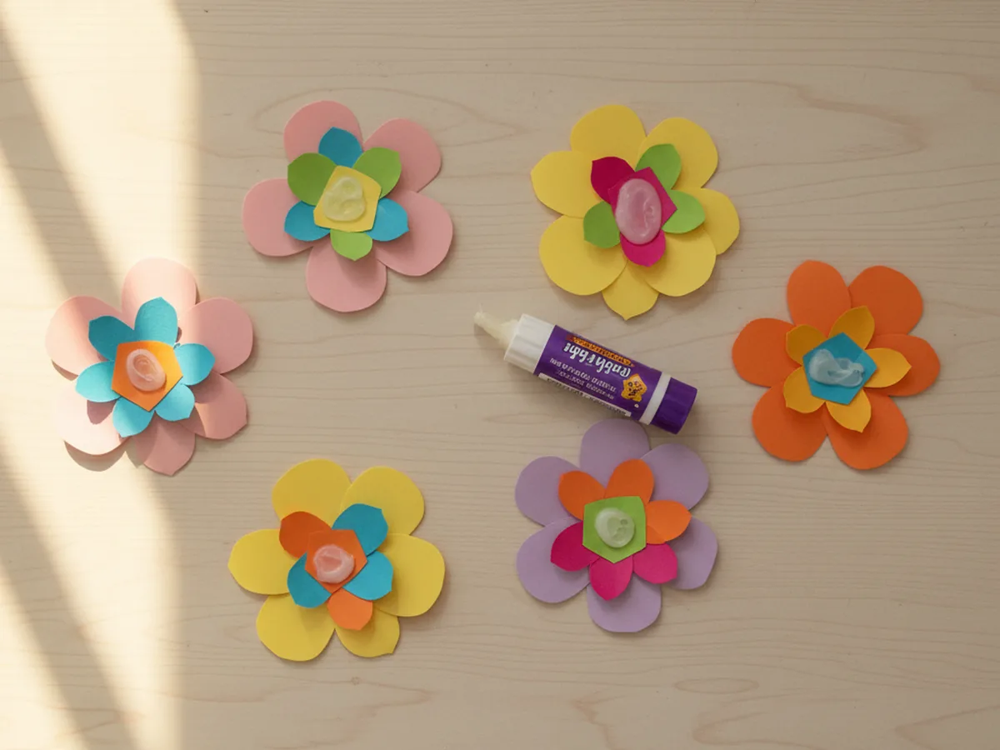
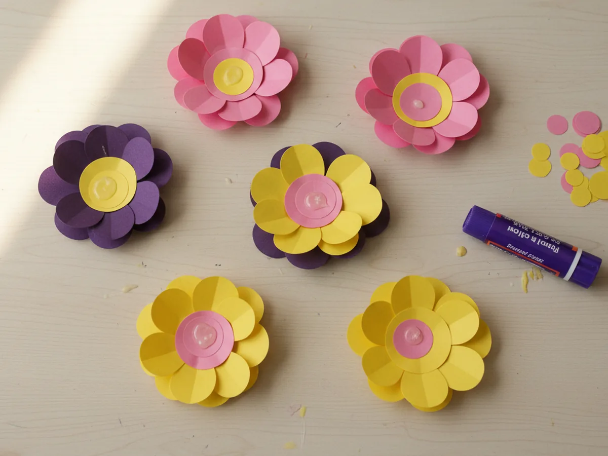
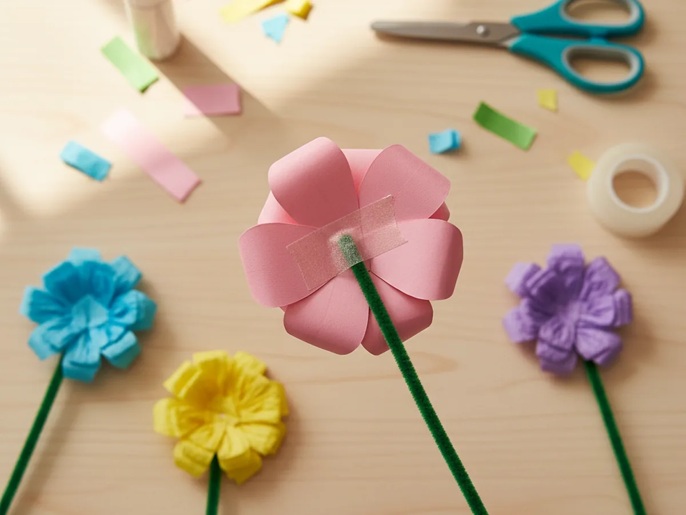
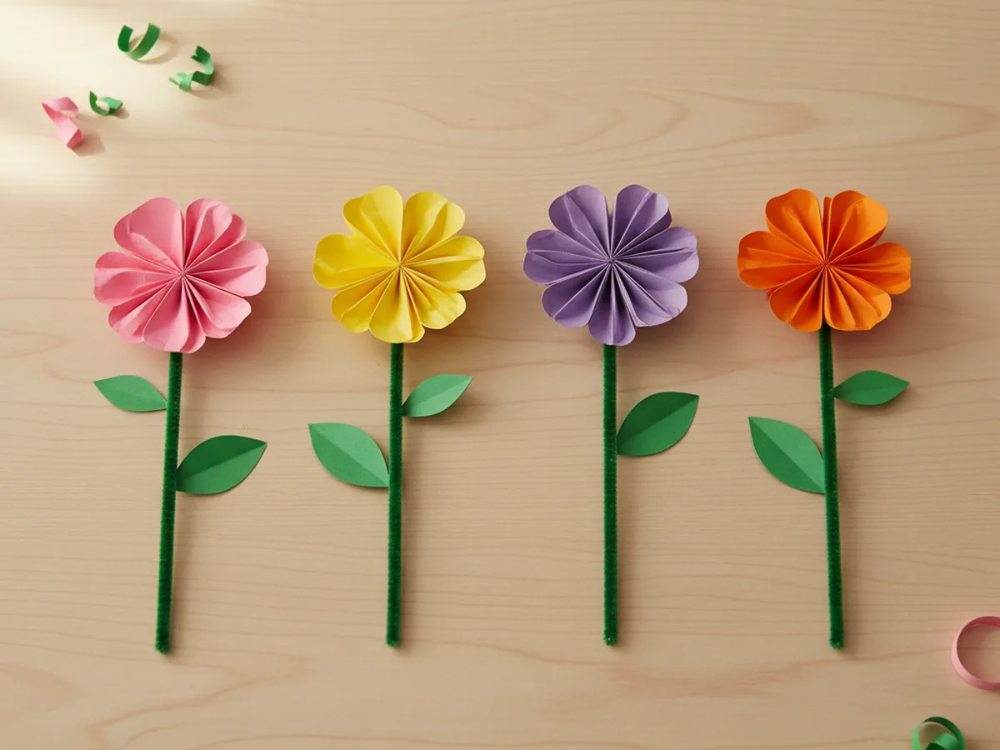
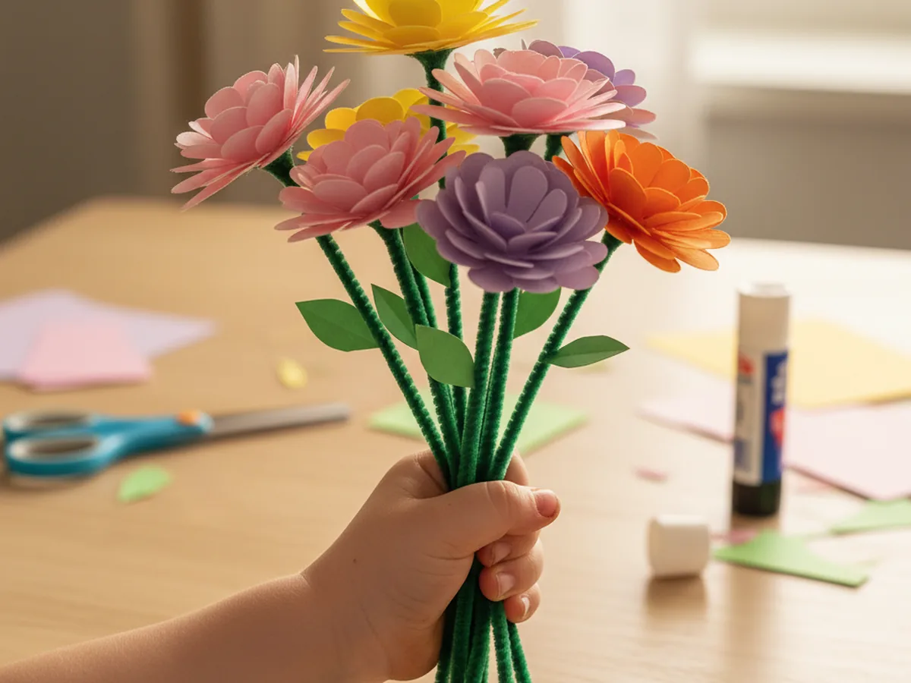
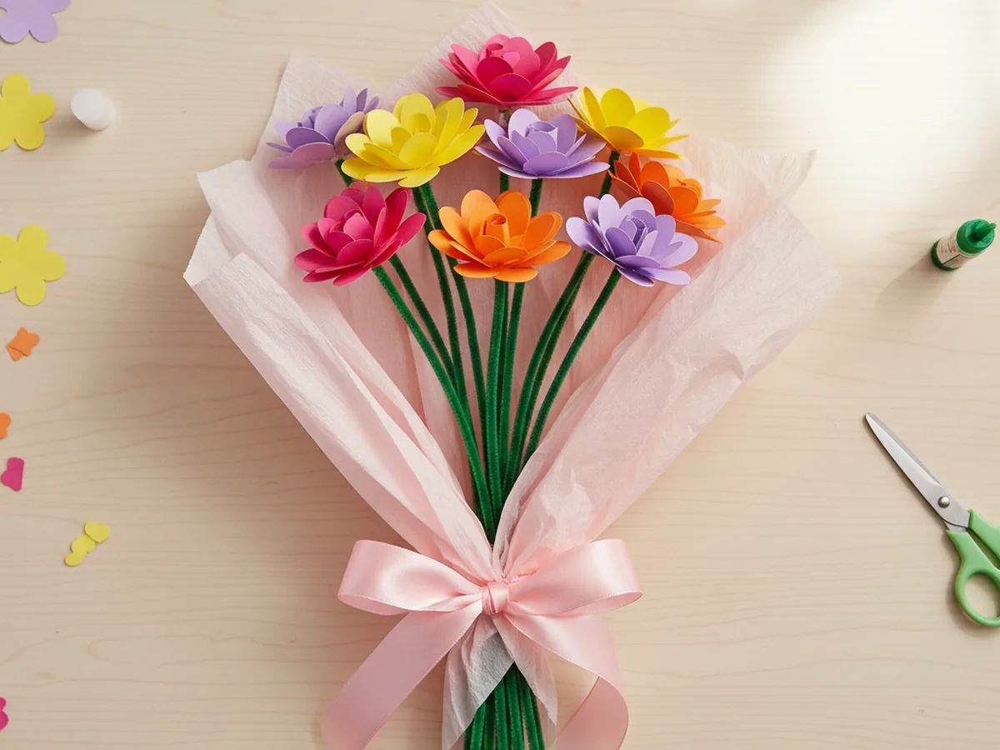

If your little one loves picking flowers or giving little gifts, this craft paper flower bouquet is going to feel like a tiny celebration. With a few sheets of bright cardstock, some green pipe cleaners, and about 40 minutes at the kitchen table, you and your child can build a real handmade bouquet sweet enough to give to grandma, daddy, or a favorite teacher. 💐
Every flower is built from simple folded shapes and a quick squiggle of glue, so you can relax and let your child take the lead. Your finished paper flower bouquet will look so pretty that you will probably want to keep it on the kitchen counter long after the gift moment is over.
Why Kids Love This Craft
There is something magical about a child holding a bouquet they made with their own little hands. Flowers feel special. They mean love, celebration, a hug without words. Watching a flat sheet of cardstock turn into a colorful bloom they can name, count, and arrange brings real pride to a small crafter. 🌸
This project also packs in plenty of quiet skill-building. Folding the cardstock strengthens little fingers, cutting the petals supports fine motor control, and picking the color combos teaches early arrangement choices. The whole paper flower craft works without sharp tools or hot glue, so nothing about it makes a beginner mom nervous.
And then there is the gift moment. A finished handmade paper bouquet almost always ends up traveling somewhere meaningful, from grandma's kitchen table to a teacher's desk to a Mother's Day breakfast tray. The pride a child feels handing over flowers they truly made lasts long after the craft table is cleaned up.

What You'll Need
Here is everything you need to make this craft paper flower bouquet together at home. Lay the supplies out before you sit down with your child so the project flows easily without anyone hopping up to dig through a drawer mid-flower.
- Astrobrights Bright Cardstock Assortment (250 Sheets), sturdy 65 lb cardstock in bright colors that hold a petal shape beautifully.
- Crayola Construction Paper (240 Sheets, 12 Colors), perfect for cutting easy green leaves and softer pastel flower layers.
- Yalumo Pipe Cleaners (1050 Pieces, 30 Colors), plenty of green chenille stems for sturdy bendable flower stems.
- Elmer's All Purpose School Glue Sticks (30 Count), clean and washable, ideal for layering paper petals without mess.
- Fiskars 5 Inch Blunt-Tip Kids Scissors, safe blades that still cut cardstock cleanly for tiny hands.
- Simetufy Colored Tissue Paper (150 Sheets, 30 Colors), soft tissue in pretty shades for wrapping the finished bouquet.
- LaRibbons 3/8 Inch Satin Ribbon (10 Rolls, 100 Yards), a rainbow of satin ribbon to tie the prettiest finishing bow.
- Crayola Broad Line Markers (10 Classic Colors), for adding tiny details on the petals or writing a sweet message on a gift tag.
- Clear tape, for securing each pipe cleaner stem to the back of its flower.
Step-by-Step Instructions
This craft paper flower bouquet is genuinely beginner-friendly and forgiving, so go at your child's pace, let them help with every flower, and have fun arranging the blooms together.
Step 1: Cut the Flower Petal Shapes
Start by cutting five to seven flower shapes from your brightest cardstock. The easy way is to fold a small square in half, then in half again, then snip a curved petal shape along the open edges. When you unfold, you have a simple four or five petal flower. Repeat in pink, yellow, purple, and orange, varying the sizes a little so the bouquet feels full and natural.
Let your child choose which colors to cut. There is no wrong answer, and the mix is what gives a handmade paper bouquet its happy, casual charm.

Step 2: Layer Two Flower Shapes for Each Bloom
Take any two flower cutouts that look pretty together, ideally one slightly bigger and in a contrasting color. Run a small dab of glue stick in the center of the larger flower, then place the smaller flower on top, rotating it so the petals offset like a real layered blossom. Press gently and repeat for every bloom in your paper flower bouquet.
This layered look is the secret to making the flowers feel full and grown-up, even when the petals themselves are simple shapes.

Step 3: Add a Center to Every Flower
Cut a small circle, about the size of a quarter, from a contrasting color of cardstock for each flower. Yellow circles look classic on pink or purple blooms, and pink circles pop against yellow petals. Glue one circle into the very middle of every layered paper flower craft and press it down firmly. Now each flower has a clear, cheerful little face.
For an extra detail your child will love, dot the center with a few marker spots so it looks like seeds or pollen. It takes ten seconds and adds so much charm.

Step 4: Attach a Green Pipe Cleaner Stem
Flip one flower over so the back is facing up. Lay the tip of a green pipe cleaner flat against the back of the flower, right behind the center, with the rest of the pipe cleaner pointing down like a stem. Press a small piece of clear tape over the pipe cleaner tip to hold it firmly in place. Give the pipe cleaner a gentle tug to make sure it holds, then repeat for every bloom in the craft paper flower bouquet.

Step 5: Add Simple Green Leaves
Cut small pointed oval leaf shapes from green cardstock or construction paper, about two leaves per flower. Wrap each leaf gently around the pipe cleaner stem about halfway down, then add a tiny dab of glue or a small piece of tape to hold it in place. Bend the leaves outward a little so they sit nicely. The flowers now feel like real garden stems ready to bundle. 🌿
You can also fold each leaf in half before attaching it so the leaf has a soft natural crease down the middle, just like a real one.

Step 6: Gather and Twist the Bouquet
Gather all the finished flowers into one hand and play with the arrangement until you like it. Move the colors so no two matching blooms touch and let some flowers sit slightly taller than others for a natural look. Once the shape feels right, hold the stems firmly near the bottom and twist them together to lock the bouquet in place. Your paper bouquet is now officially a real bundle, ready to be wrapped.
This is the moment your child suddenly sees the bouquet come to life. Pause and let them hold it up to a mirror or show it off to a sibling.

Step 7: Wrap in Tissue Paper and Tie a Bow
Lay a square of soft pink or pastel tissue paper flat on the table. Place the gathered bouquet diagonally across the paper with the flower heads near one corner. Fold the tissue up around the stems, gather it gently at the base, and tie a satin ribbon around the wrapping in a soft bow. The very simple act of finishing the wrap turns a bundle of paper craft blooms into a proper little gift. 🎀
Hand the finished craft paper flower bouquet to your child and watch their face light up. Whether they keep it on the dresser or give it away the same afternoon, this is the kind of craft that ends with a happy hug. 💛

Variations to Try
Mother's Day Mini Bouquet: Use just three flowers in soft pastel pinks, lavenders, and whites for a tiny version perfect for tucking next to a breakfast tray. Add a paper tag with a handwritten note for the sweetest morning surprise.
Tissue Paper Pom Bouquet: Swap the cardstock flowers for layered tissue paper circles cut into ruffled shapes and fluffed up. The result feels softer and more like real garden roses, and is a great way to use up tissue paper scraps.
Toddler-Friendly Single Stem: For younger crafters, skip the bouquet and just make one giant single flower on a long pipe cleaner stem. It is just as proud of a moment, and tiny hands manage the bigger pieces more easily.
Final Thoughts
This craft paper flower bouquet is the kind of project that feels like it should be harder than it is. The finished bouquet looks sweet enough to gift and sparks a real moment of pride, but the steps themselves are so gentle that a preschooler can manage most of them with a little help.
If your little one loved building this paper bouquet, save the tutorial on Pinterest so you can come back to it for the next birthday or Mother's Day morning. Happy crafting, friend.
More Crafts You'll Love
If your child enjoyed making this paper bouquet, they will love these other sweet paper flower projects next: